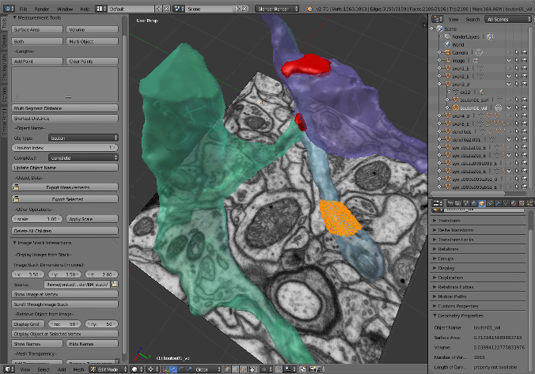
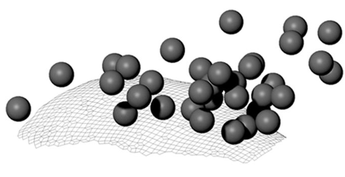
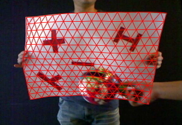
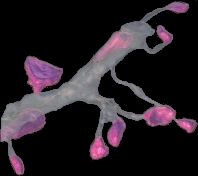
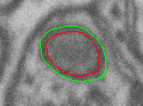
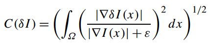
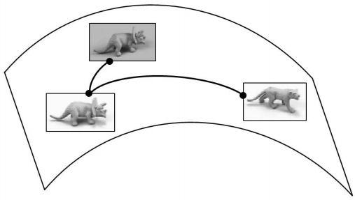
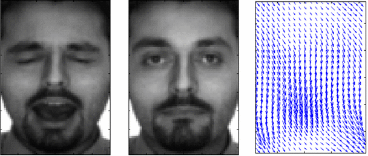
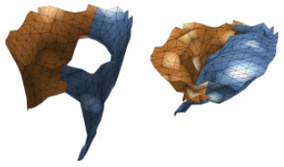

Papers, Posters, and Software

NeuroMorph: A Toolset for the Morphometric Analysis and Visualization of 3D Models Derived from Electron Microscopy Image Stacks
A. Jorstad, B. Nigro, C. Cali, M. Wawrzyniak, P. Fua, G. Knott. Neuroinformatics, 2014.
Code and tutorials on GitHub (project actively under development)
Leveraging Doctoral Requirements to Promote Reproducibility
(Essay contest winner)
A. Jorstad. The Winnower, 2016.
A. Jorstad. The Winnower, 2016.

Delayed and Temporally Imprecise Neurotransmission in Reorganizing Cortical Microcircuits
S. Barnes, C. Cheetham, Y. Liu, S. Bennett, G. Albieri, A. Jorstad, G. Knott, G. Finnerty. The Journal of Neuroscience, 2015.
S. Barnes, C. Cheetham, Y. Liu, S. Bennett, G. Albieri, A. Jorstad, G. Knott, G. Finnerty. The Journal of Neuroscience, 2015.

Dense Image Registration and Deformable Surface Reconstruction in Presence of Occlusions and Minimal Texture
D.T. Ngo, S. Park, A. Jorstad, A. Crivellaro, C.D Yoo, P. Fua. IEEE International Conference on Computer Vision (ICCV), 2015.
D.T. Ngo, S. Park, A. Jorstad, A. Crivellaro, C.D Yoo, P. Fua. IEEE International Conference on Computer Vision (ICCV), 2015.

Correlative In Vivo 2-Photon Beam Scanning Electron Microscopy: 3D Analysis of Neuronal Ultrastructure
B. Maco, A. Holtmaat, A. Jorstad, P. Fua, G. Knott. Methods in Cell Biology, 2014.

Refining Mitochondria Segmentation in EM Imagery with Active Surfaces
A. Jorstad, P. Fua. European Conference on Computer Vision (ECCV), Workshop on Non-Rigid Shape Analysis and Deformable Image Alignment, 2014.

Deformations and Lighting
D. Jacobs, A. Jorstad, A. Trouvé. Chapter, Shape Perception in Human and Computer Vision, 2013.
D. Jacobs, A. Jorstad, A. Trouvé. Chapter, Shape Perception in Human and Computer Vision, 2013.

A Fast Illumination and Deformation Insensitive Image Comparison Algorithm Using Wavelet-Based Geodesics
A. Jorstad, D. Jacobs, A. Trouvé. European Conference on Computer Vision (ECCV), 2012.
Matlab implementation
A. Jorstad, D. Jacobs, A. Trouvé. European Conference on Computer Vision (ECCV), 2012.
Matlab implementation

Measuring Deformations and Illumination Changes in Images with Applications to Face Recognition
A. Jorstad. Ph.D. Thesis, University of Maryland, College Park, 2012.
Slides

A Deformation and Lighting Insensitive Metric for Face Recognition Based on Dense Correspondences
A. Jorstad, D. Jacobs, A. Trouvé. Computer Vision and Pattern Recognition (CVPR), 2011.
Women in Machine Learning Conference Poster, 2010
A. Jorstad, D. Jacobs, A. Trouvé. Computer Vision and Pattern Recognition (CVPR), 2011.
Women in Machine Learning Conference Poster, 2010

Patient-Specific Modeling and Analysis of the Mitral Valve Using 3D-TEE
P. Burlina, C. Sprouse, D. DeMenthon, A. Jorstad, R. Juang, F. Contijoch, T. Abraham, D. Yuh, E. McVeigh. Information Processing in Computer-Assisted Interventions (IPCAI), 2010.
Individualized Cardiothoracic Surgical Planning using Computer Aided 3D Modeling and Image Analysis
P. Burlina, C. Sprouse, D. DeMenthon, A. Jorstad, F. Contijoch, E. McVeigh, R. Juang, T. Abraham, D. Yuh. AMA/IEEE EMBS Medical Technology Conference, 2010.
P. Burlina, C. Sprouse, D. DeMenthon, A. Jorstad, R. Juang, F. Contijoch, T. Abraham, D. Yuh, E. McVeigh. Information Processing in Computer-Assisted Interventions (IPCAI), 2010.
Individualized Cardiothoracic Surgical Planning using Computer Aided 3D Modeling and Image Analysis
P. Burlina, C. Sprouse, D. DeMenthon, A. Jorstad, F. Contijoch, E. McVeigh, R. Juang, T. Abraham, D. Yuh. AMA/IEEE EMBS Medical Technology Conference, 2010.

Distributed Consensus on Camera Pose
A. Jorstad, D. DeMenthon, I. Wang, P. Burlina. IEEE Transactions on Image Processing, 2010.
Model-Based Pose Estimation by Consensus
A. Jorstad, P. Burlina, I. Wang, D. Lucarelli, D. DeMenthon. Intelligent Sensors, Sensor Networks and Information Processing (ISSNIP 2008), 2008.
A. Jorstad, D. DeMenthon, I. Wang, P. Burlina. IEEE Transactions on Image Processing, 2010.
Model-Based Pose Estimation by Consensus
A. Jorstad, P. Burlina, I. Wang, D. Lucarelli, D. DeMenthon. Intelligent Sensors, Sensor Networks and Information Processing (ISSNIP 2008), 2008.

Robust Face Recognition Measuring 2D Deformations
A. Jorstad. Ph.D. Candidacy Exam, Department of Applied Mathematics & Statistics, and Scientific Computation, University of Maryland, College Park, 2009.
Slides
A. Jorstad. Ph.D. Candidacy Exam, Department of Applied Mathematics & Statistics, and Scientific Computation, University of Maryland, College Park, 2009.
Slides

Leaf Classification from Local Boundary Analysis
A. Jorstad, D. Jacobs. Poster, Graduate Research Interaction Day, University of Maryland, College Park, 2008.